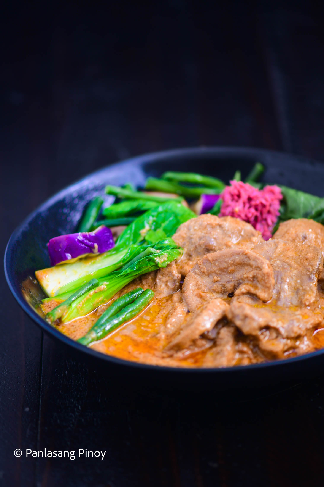

Lengua Kare-kare
This, like your regular Kare-Kare, utilizes a thick, peanut stew. But to complement it, we use beef tongue instead of other beef cuts. Why? Well, because when cooked right, beef tongue or lengua can make for the most tender and satisfying ingredient. And you’ll only be better able to savor this alongside the tasty bok choy, eggplant and other vegetables.
Of course, to get it perfectly soft, we will need to put the work in with our pressure cooker. This will take some time, but the result is definitely incredible enough to inspire patience for every cooking process. Let’s waste no more time, and get to cooking then!
How to make Lengua Kare-Kare:
Pressure cooking the beef tongue:
We will start by pouring water into our pressure cooker, and then placing 4 lbs. Of beef tongue inside. Then pressure-cook this for a total of 45 minutes to get it tender. After that, take the beef tongue out, and let this cool. Now remove the skin from the tongue, and then slice them up into serving pieces.
Making the Kare-Kare stew:
For this step, we will start by steaming 1 Chinese eggplant, and 12 string beans we’ve cut up into 2-inch pieces. Keep steaming this for 10 minutes. At the same time, you can also steam your 2 bunches of bok choy, but only for 5 minutes.
As you wait, you could get started with creating the peanut-y paste by roasting ¾ cup of almonds and the same amount of peanuts in a pan. Keep this up until you see them turn brown. Then you should place the nuts in a food processor. Blitz until you achieve a paste-like consistency. And then set this aside.
We will now get a wok, and start heating up 4 tablespoons of annatto oil. This provides some color for our dish. Now add 5 cloves of garlic you’ve chopped, and 1 onion you’ve minced. Sauté these together until the onion gets soft.
Integrating the meat into the dish:
Now is the time for you to whip out your tender sliced beef tongue from earlier. We will also be sautéing this for 2 minutes. Now pour 32 ounces of beef broth into the wok, and then put the cover on. Wait for this to boil, and once it does, keep boiling for 10 minutes with low heat.
And you should also get the peanut and almond paste from earlier, and mix it in. Stir the mixture until the ingredients have blended perfectly. Then with the cover off, keep cooking for 7 minutes. Season this with some salt to your taste, then you can put everything on your serving bowl. Add the steamed vegetables as well, and then serve with some delicious bagoong alamang.
Good job with this Lengua Kare-Kare dish! That wasn’t too difficult, was it? If this has got you thinking about brushing up on your lengua and Kare-Kare cooking, let me introduce you to more recipes!
| Tender ox tongue cooked in peanut and almond sauce and served with steamed bok choy, eggplant and string beans. | |
| Course | Main Course |
| Cuisine | Filipino |
| Keyword | kare kare recipe, lengua, lengua recipe |
| Prep Time | 15 minutes |
| Cook Time | 1 hour 30 minutes |
| Servings | 4 people |
| Calories | 1707kcal |
| Author | Vanjo Merano |
- 4 lbs. beef tongue
- ¾ cups peanut
- ¾ cup almonds
- 2 bunches bok choy
- 1 Chinese eggplant
- 12 string beans cut in 2-inch pieces
- 1 onion minced
- 5 cloves garlic chopped
- 2 quarts water
- 32 ounces beef broth
- 4 tablespoons annatto oil
- Salt to taste
Ingredients
- Pour water in a pressure cooker. Add ox tongue. Pressure-cook for 45 minutes. Remove the tongue afterwards and let it cool down. Take the skin off the tongue and then slice into serving pieces. Set aside.
- Prepare the vegetables by steaming the eggplant and string beans for 10 minutes. Steam the bok choy for 5 minutes.
- Prepare the peanuts and almonds by roasting on a pan until the color starts to turn brown. Put the nuts in a food processor and blitz until the mixture turns into a paste-like consistency. Set aside.
- Heat annatto oil on a wok. Sauté garlic and onion.
- Once the onion softens, add the sliced lengua. Sauté for 2 minutes.
- Pour the beef broth into the wok. Cover and let boil. Continue boiling for 10 minutes in low heat setting.
- Add the peanut and almond paste. Stir until all ingredients are well blended. Continue cooking uncovered for 7 minutes. Season with salt.
- Transfer to a serving bowl and add the steamed vegetables. Serve with shrimp paste (bagoong alamang).
- Share and enjoy!